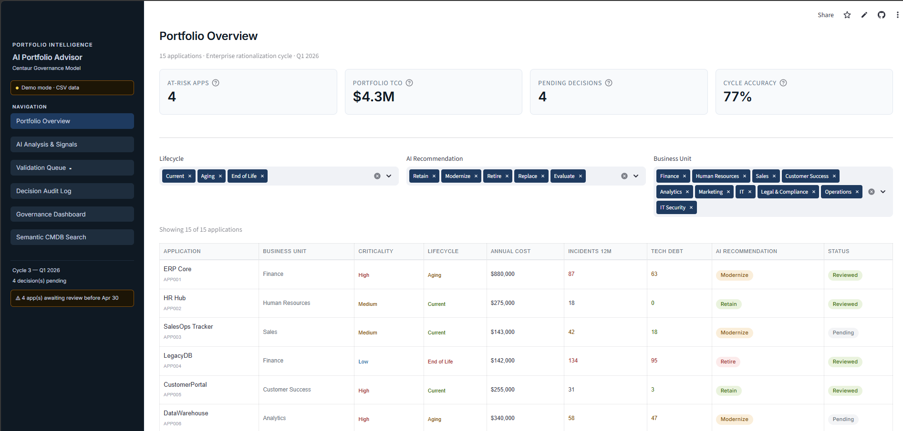
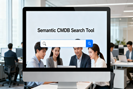
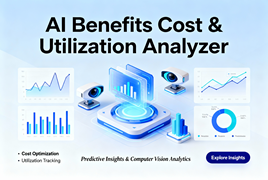

My Experience
I am a Technical Product Manager focused on defining and delivering enterprise platforms that improve decision-making, streamline workflows, and reduce operational complexity.
Over 20 years at GE Vernova, GE Power, and Alstom Power, I have owned products supporting application portfolio management, modernization planning, and enterprise system transformation.
My work centers on structuring data, workflows, and governance into scalable systems that enable consistent, data-informed decisions around cost, risk, and investment priorities.
I apply AI within these environments to enhance decision quality, using approaches such as semantic search and exploring retrieval-augmented techniques, while maintaining transparency, validation, and human accountability.
I am seeking a Technical Product Manager role focused on building enterprise platforms that improve decision-making and responsibly apply AI to real business workflows.
My Point of View on Enterprise AI
Most organizations are not failing at AI because of the models. They are struggling because they are applying AI to problems that have not been translated into clear, actionable decisions.
AI does not solve problems directly. It supports decisions that address those problems. If the decision is not clearly defined, owned, and measurable, AI introduces risk instead of value.
Core Insight
I view AI as a decision-support capability, not a decision-maker. The decision must be explicit, ownership must be assigned, and outcomes must be measurable and validated.
How I Approach It
- Start with the decision: define what needs to be decided, who owns it, and what success looks like
- Separate pattern work from judgment: AI supports pattern recognition, humans own tradeoffs
- Keep AI in an advisory role with required human validation
- Track false positives, false negatives, and business impact
- Assign ownership and monitor outcomes through feedback loops
My Product Approach
Start with the Decision
I define the decision we are trying to improve, who owns it, and what action it drives. If the decision is unclear, I do not move forward.
Decompose the Workflow
I map the end-to-end workflow, separating data retrieval, rules-based logic, pattern recognition, and human judgment to identify where AI actually fits.
Choose the Right Approach
I determine whether the problem requires rules, search, retrieval-based approaches, or machine learning. Not every problem needs AI.
Design Human + AI Interaction
I define what the AI does, what the human does, and where validation occurs. AI supports decisions, but humans remain accountable.
Define Success & Risk
I establish business metrics and assess risk early, ensuring outputs are measurable, reversible, and appropriate for the level of impact.
Pilot, Measure, and Scale
I start with a narrow use case, measure both output quality and workflow impact, and scale only when value, trust, and control are proven.
AI and Emerging Technology Prototypes
These products demonstrate how I design AI-enabled systems to improve decision-making within enterprise workflows. Each product focuses on a specific business decision, applying structured data, decision workflow design, and targeted AI techniques to enhance consistency, speed, and insight.
Across these initiatives, I defined the product vision, decision workflows, system architecture, and MVP scope. I used generative AI to accelerate prototyping and validate decision workflows, while maintaining ownership of product direction, data design, and validation of business impact.
GenAI Application Rationalization Advisor: Designed to improve application portfolio decisions by supporting retain, retire, modernize, and consolidate strategies. I defined the decision workflow, developed a prototype using structured portfolio data and LLM-based analysis, and designed a human-in-the-loop model to ensure validation, accountability, and measurable impact.
Semantic CMDB Search Tool: Built a working semantic search prototype that connects to a ServiceNow PDI via REST APIs, generates embeddings using OpenAI, and stores them in a vector database (ChromaDB) to enable natural language search across CMDB records. This allows users to surface system relationships, dependencies, and insights more efficiently. This prototype also highlighted the impact of CMDB data quality on retrieval accuracy, reinforcing the need for consistent and well-structured enterprise data to support reliable AI-driven insights.
AI Benefits Cost and Utilization Analyzer: Designed as a decision-support prototype to analyze benefits and claims data for cost and utilization insights. I defined the data architecture using a local Data Lakehouse, with a roadmap including predictive analytics, document intelligence, and conversational interfaces, while maintaining strict data privacy and governance.

GenAI App Rationalization Advisor
- Designed an AI-assisted decision-support product to improve application portfolio decisions across retain, retire, modernize, and consolidate strategies.
- Defined the end-to-end decision workflow, incorporating structured application data, dependencies, and business context to improve consistency and reduce manual analysis.
- Designed the system to evolve toward retrieval-based approaches, using semantic search concepts to improve grounding and explainability of AI-generated recommendations.
- Established a human-in-the-loop validation model to ensure accountability, reduce risk, and prevent over-reliance on AI-generated recommendations.
- Delivered an interactive prototype with a local interface, enabling users to review recommendations, validate outputs, and generate structured decision reports.
View Case Study

Semantic CMDB Search Tool
- Designed a semantic search product to improve how teams access and interpret CMDB data within ServiceNow, connecting to a PDI via REST APIs to reduce time spent navigating complex system relationships.
- Defined the retrieval workflow and user experience, enabling natural-language queries to surface relevant applications, dependencies, and infrastructure context.
- Implemented an end-to-end vector-based retrieval pipeline, generating embeddings using OpenAI and storing them in ChromaDB to enable semantic search across CMDB records.
- Delivered an interactive prototype demonstrating how AI can enhance visibility into enterprise systems and support faster, more informed operational decisions, while highlighting the impact of data quality on retrieval accuracy.
View Case Study

AI Benefits Cost & Utilization Analyzer
- Designed a decision-support prototype to analyze benefits and claims data, with a focus on cost and utilization trends for HR and finance stakeholders.
- Defined the system architecture, data workflow, and ingestion strategy to support scalable analysis and reporting.
- Built a Bronze-layer Data Lakehouse using open datasets (CMS, BLS, Medicare) to simulate enterprise data integration and enable structured analysis.
- Established a roadmap including predictive modeling, document intelligence, and conversational interfaces, with future integration into enterprise HR systems.
View Case Study
Enterprise AI Architecture & Capabilities
I design AI-enabled systems that improve decision-making within enterprise workflows. My focus is on defining data flows, retrieval and reasoning patterns, and human-in-the-loop validation to ensure outputs are accurate, explainable, and aligned to business impact.
AI Patterns & Capabilities
- Retrieval-based approaches, including retrieval-augmented techniques, to ground AI outputs in enterprise data
- Semantic search using embeddings to improve data access and context retrieval
- Generative AI for summarization, recommendation generation, and reporting
- Predictive analytics concepts for identifying trends, risks, and optimization opportunities
Data Architecture
- Designed data flows across CMDB, application portfolio, and structured datasets for use in prototype systems
- Local Data Lakehouse architecture supporting scalable analytics and experimentation
- Vector-based indexing to enable context-aware retrieval across enterprise data
Application & System Design
- Defined end-to-end system behavior including data ingestion, retrieval, and output generation
- Designed user workflows for interacting with AI-generated insights and recommendations
- Delivered interactive prototypes demonstrating real-world enterprise use cases
Data Sources
- Enterprise CMDB and application portfolio data including cost, risk, and dependencies (prototype and simulated environments)
- Structured datasets supporting analytics and modeling use cases
- External datasets used to simulate real-world enterprise scenarios
Outputs & Decision Support
- AI-generated recommendations with supporting rationale and context
- Structured outputs designed for stakeholder review and validation
- Reporting and dashboards to support planning, prioritization, and operational decisions
Governance & Product Ownership
- Defined human-in-the-loop validation models to ensure accountability
- Designed systems to balance automation with control and risk management
- Focused on measurable impact aligned to safety, quality, delivery, and cost
- Owned product direction, MVP scope, and architecture decisions across all prototypes
I focus on product roles where enterprise platforms, data, and AI come together to improve decision-making, planning, and operational workflows at scale.